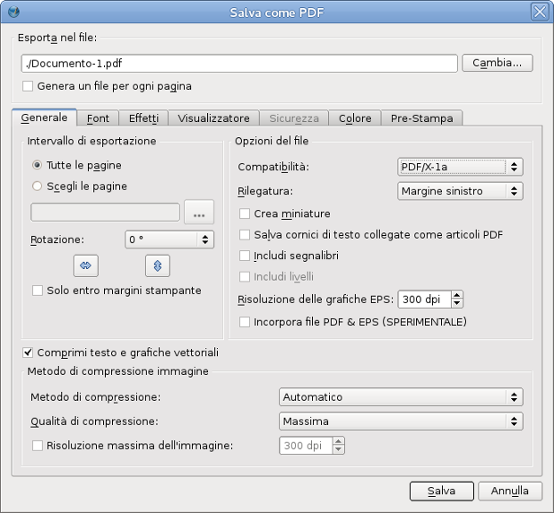
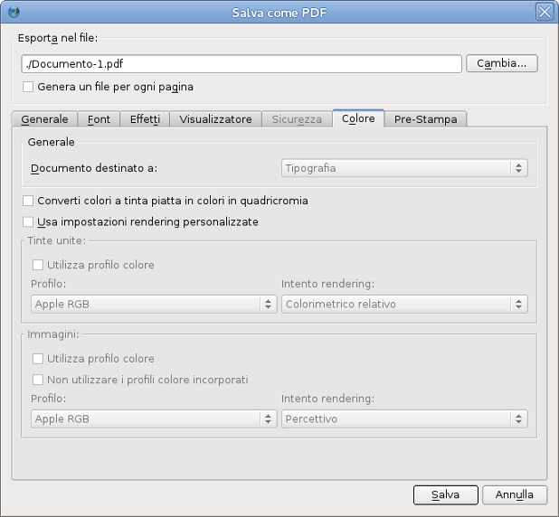
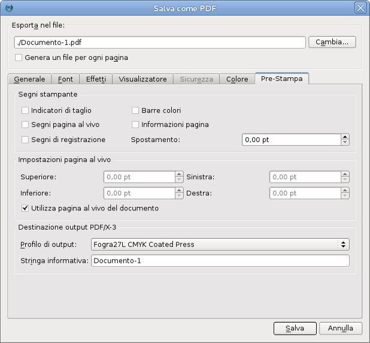

La creazione di documenti PDF “pronti per la stampa” commerciale è sempre stata esposta a molti errori, specialmente per gli utenti privi di familiarità con le sottigliezze del PostScript, della “distillazione” di PDF e con le variabili capacità delle macchine per la creazione di lastre tipografiche o per la stampa digitale. C'è molto di vero nel detto “È difficile creare un buon PDF, ma è facilissimo fare pasticci”. L'uso più comune della famiglia di applicazioni Adobe Acrobat Distiller per la creazione di PDF, tipicamente richiede la conoscenza almeno parziale dei quasi cento diversi parametri di Distiller.
La creazione del PDF/X è, in parte, un tentativo di mettere a disposizione di utenti e creatori uno strumento non proprietario per valutare se i file sono adatti alla stampa professionale o allo scambio con agenzie di servizi. Essenzialmente, i file PDF/X, da una parte permettono di utilizzare soltanto un certo sottoinsieme delle capacità del formato PDF, e dall'altra rendono obbligatorio l'utilizzo di certe altre.
Nei paesi europei, le idee alla base del PDF/X sono state accolte prima e più ampiamente rispetto al Nord America. Lo stimolo allo sviluppo di questi standard è venuto principalmente da aziende svizzere e tedesche, molte delle quali sono leader mondiali nelle tecnologie per la stampa e il trattamento delle immagini digitali.
http://pdfx.info (inglese)
http://www.pdfx-ready.ch (tedesco)
http://boscarol.com/pages/printbuyer/pdfx.html (italiano)
http://www.certifiedpdf.net/resources/standards_pdfforprint_it.php (italiano)
Scribus offre agli utenti la possibilità di creare facilmente file PDF che rispettano al 100 % lo standard PDF/X. Con l'uso avveduto delle opzioni PDF, gli utenti possono essere certi che i loro file saranno conformi agli standard al 100 %.
Prima di esportare in PDF/X-1a o PDF/X-3, controllate che i file che create possano essere utilizzati dalla vostra tipografia o agenzia di servizi. Non tutti sono attrezzati per utilizzare la tecnologia PDF/X.
In breve: quando la vostra tipografia basa il suo lavoro su file PDF/X-1a. Lo usano molte tipografie per la stampa rapida su richiesta (“on-demand”), e nel Nord America è ampiamente utilizzato anche in tipografie con un'organizzazione tradizionale.
Lo svantaggio del PDF/X-1a è la mancanza di controllo sull'accuratezza del colore, specialmente per i colori CMYK. Per ottenere i migliori risultati, esso richiede una buona intesa tra il grafico e la tipografia. Come sempre, è decisamente consigliata una visita in anticipo alla tipografia . Oltre a ciò, poiché i colori RGB non sono ammessi nei file PDF/X-1a, Scribus converte tutti i colori RGB in CMYK, in base a un certo profilo colore.
Ci si può chiedere quale profilo per la stampante si dovrebbe usare. Vi sono due strategie: la prima consiste nell'ottenere un profilo ICC effettivamente usato dalla vostra tipografia per il tipo di carta corrispondente; la seconda consiste nell'usare uno standard di stampa noto, come SWOP, ECI o altri.
Nelle Impostazioni documento controllate che la gestione del colore sia attivata e che siano stati selezionati i corretti profili colore. La situazione ideale è che il profilo colore per la stampa corrisponda a una condizione di stampa definita da uno standard ISO, o che esso sia fornito dalla vostra tipografia. Se la gestione del colore non è attiva, non è possibile esportare in PDF/X-1a. Poi selezionate File > Esporta …> Salva come PDF …, oppure fate clic sull'icona PDF nella barra degli strumenti.
Si apre questo pannello, in cui dovete selezionare “PDF/X-1a” dal menù a discesa “Compatibilità” come mostrato qui sotto. Le impostazioni predefinite cambieranno automaticamente.
|  |
Poi passate alla scheda “Colore”, come mostrato qui sotto:
|  |
Nella scheda “Colore” la scelta della destinazione di stampa è disattivata. Il motivo è che per il PDF/X-1a la sola opzione possibile è “Tipografia” (cioè CMYK).
Poi selezionate la scheda “Pre-Stampa”, come mostrato sotto:
|  |
Questa è la fase in cui inserite nel PDF la condizione di stampa desiderata, che è definita dal profilo colore ICC. Potete anche inserire una breve nota sul documento, che potrebbe essere utile in seguito. Questo campo non può restare vuoto, poiché è richiesto dalle specifiche tecniche PDF/X-1a. Se questo campo è vuoto, Scribus disabilita il pulsante “Salva”. Potete anche aggiungere altri elementi per la prestampa, come barre di colore o segni per la stampa, ma dovreste farlo soltanto se la vostra tipografia li richiede.
Nota: a causa dei requisiti del PDF/X-1a, alcune caratteristiche del formato PDF sono disabilitate, tra cui le annotazioni, la crittografia e gli effetti di presentazione; tutti i caratteri sono automaticamente incorporati o inseriti come sottoinsieme. Inoltre le trasparenze non vengono esportate.